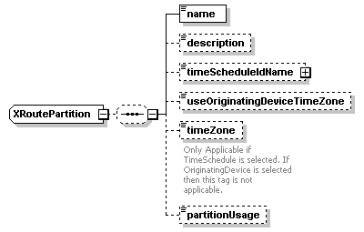
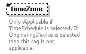

| diagram |  | ||
| namespace | http://www.cisco.com/AXL/API/10.5 | ||
| children | name description timeScheduleIdName useOriginatingDeviceTimeZone timeZone partitionUsage | ||
| used by |
|
||
| source | <xsd:complexType name="XRoutePartition"> <xsd:sequence minOccurs="0"> <xsd:element name="name" type="xsd:string" nillable="false" minOccurs="1" maxOccurs="1"/> <xsd:element name="description" type="xsd:string" nillable="false" minOccurs="0" maxOccurs="1"/> <xsd:element name="timeScheduleIdName" type="axlapi:XFkType" nillable="true" minOccurs="0" maxOccurs="1"/> <xsd:element name="useOriginatingDeviceTimeZone" type="axlapi:boolean" default="true" nillable="false" minOccurs="0" maxOccurs="1"/> <xsd:element name="timeZone" type="axlapi:XTimeZone" default="Etc/GMT" nillable="false" minOccurs="0" maxOccurs="1"> <xsd:annotation> <xsd:documentation>Only Applicable if TimeSchedule is selected. If OriginatingDevice is selected then this tag is not applicable.</xsd:documentation> </xsd:annotation> </xsd:element> <xsd:element name="partitionUsage" type="axlapi:XPartitionUsage" default="General" nillable="false" minOccurs="0" maxOccurs="1"/> </xsd:sequence> </xsd:complexType> |
element XRoutePartition/name
| diagram | |||||
| type | xsd:string | ||||
| properties |
|
||||
| source | <xsd:element name="name" type="xsd:string" nillable="false" minOccurs="1" maxOccurs="1"/> |
element XRoutePartition/description
| diagram | |||||||||
| type | xsd:string | ||||||||
| properties |
|
||||||||
| source | <xsd:element name="description" type="xsd:string" nillable="false" minOccurs="0" maxOccurs="1"/> |
element XRoutePartition/timeScheduleIdName
| diagram |  |
||||||||||||
| type | axlapi:XFkType | ||||||||||||
| properties |
|
||||||||||||
| attributes |
|
||||||||||||
| source | <xsd:element name="timeScheduleIdName" type="axlapi:XFkType" nillable="true" minOccurs="0" maxOccurs="1"/> |
element XRoutePartition/useOriginatingDeviceTimeZone
| diagram | |||||||||||
| type | axlapi:boolean | ||||||||||
| properties |
|
||||||||||
| facets |
|
||||||||||
| source | <xsd:element name="useOriginatingDeviceTimeZone" type="axlapi:boolean" default="true" nillable="false" minOccurs="0" maxOccurs="1"/> |
element XRoutePartition/timeZone
| diagram |  | ||||||||||
| type | axlapi:XTimeZone | ||||||||||
| properties |
|
||||||||||
| annotation |
|
||||||||||
| source | <xsd:element name="timeZone" type="axlapi:XTimeZone" default="Etc/GMT" nillable="false" minOccurs="0" maxOccurs="1"> <xsd:annotation> <xsd:documentation>Only Applicable if TimeSchedule is selected. If OriginatingDevice is selected then this tag is not applicable.</xsd:documentation> </xsd:annotation> </xsd:element> |
element XRoutePartition/partitionUsage
| diagram | |||||||||||
| type | axlapi:XPartitionUsage | ||||||||||
| properties |
|
||||||||||
| source | <xsd:element name="partitionUsage" type="axlapi:XPartitionUsage" default="General" nillable="false" minOccurs="0" maxOccurs="1"/> |
XML Schema documentation generated by XMLSpy Schema Editor http://www.altova.com/xmlspy